< 0：自发
dAT,V < 0 或 dGT,p < 0
在给定约束下体系会自动朝该方向变化，直到函数取到极小值。
LECTURE 08 · 2026/10/08
The Second Law: the machinery — the Helmholtz and Gibbs energies, the fundamental equations, and the chemical potential
第七课用熵建立了自发方向的判据 ΔSiso ≥ 0，但孤立体系的总熵很难直接测量：要判断一个烧杯里的反应是否自发，必须把环境一起算进来。这一讲要把判据改写成只用体系自身的状态函数表达，从而得到化学中最常用的两个函数——Helmholtz 能 A 与 Gibbs 能 G。
课件的第 4.7 节与第 5 章承担两件事：第一，找出状态函数之间“看起来无关其实有关”的关系（基本方程与 Maxwell 关系），用来推出 G 随 T 与 p 的变化；第二，引入化学势，并把理想气体的公式修补成对真实气体也成立的形式，即逸度。课件原文说，化学势是“几乎全部重要热力学应用的基础”。
第七课末尾的“课件未展开的两节”正是本讲内容：4.6 Helmholtz 能与 Gibbs 能、4.7 标准摩尔 Gibbs 能。本讲的第 2—4 节对应 4.6，第 5—6 节对应 4.7，第 7 节起进入第 5 章。
课件从“把判据从孤立体系搬到体系自身”出发，直接给出两个定义：
两者都是状态函数，因为 U、H、S、T 都只依赖状态。在恒温条件下取微分，T 视为常数：
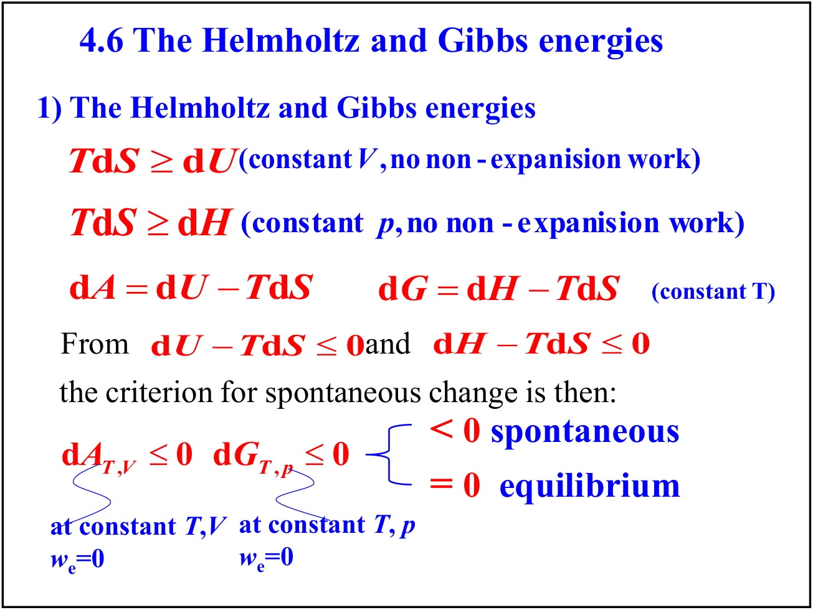
为什么这样定义就能得到判据？把 Clausius 不等式 TdS ≥ dq 与第一定律 dU = dq + dw 联立。课件同时给出两个版本，分别对应恒容与恒压：
移项后得到 dU − TdS ≤ 0 与 dH − TdS ≤ 0，写成 A 与 G 就是自发判据：
在给定约束下体系会自动朝该方向变化，直到函数取到极小值。
函数已在极小点，体系处于平衡。这正是化学平衡与相平衡条件的来源。
两个判据的适用范围不同：A 用的是恒 T、恒 V，G 用的是恒 T、恒 p，两者都要求不做非膨胀功（we = 0）。化学反应通常在敞口容器中进行，恒压条件自然满足，这就是 G 在化学中比 A 更常用的原因。
A 与 G 的物理意义可以从“做功能力”读出。课件从 Clausius 不等式 TdS ≥ dq 出发：把 dq = dU − dw 代入，得到 dU ≤ TdS + dw，即
由恒温下 dA = dU − TdS，等号成立时（可逆过程）：
课件把 A 称为“最大功函数”（maximum work function），并提示 A 取自德语 Arbeit（功）。这就是 A 这个字母的来源。
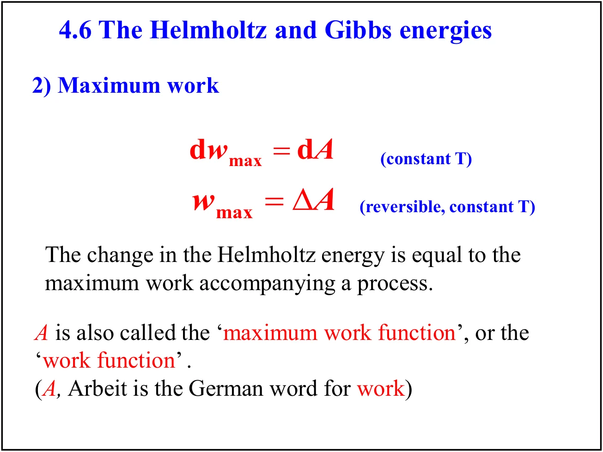
更贴近化学的是非膨胀功。做功可分为膨胀功 −pdV 与非膨胀功 dwe（电功、表面功等）。对恒 T、恒 p 的可逆过程，课件经过 dG = dH − TdS 与 dH = d(U + pV) 的替换得到：
也就是说：恒温恒压下可逆过程能提供的最大非膨胀功等于 Gibbs 能的变化。这正是原电池电动势、肌肉收缩等问题可以直接用 ΔG 计算的原因。
课件例题：1.00 mol 葡萄糖在 37 ℃（血液温度，310 K）的标准条件下燃烧，能提供多少用于肌肉与神经活动的能量？已知 ΔrH° = −2808 kJ·mol−1，ΔrS° = +182.4 J·K−1·mol−1。
反应的可用非膨胀功等于标准反应 Gibbs 能变，用 ΔrG° = ΔrH° − TΔrS°：
课件取整算作 −2862 kJ·mol−1（用 298 K），并给出一个直观换算：70 kg 的人垂直爬升 3.0 m 需做功 2.1 kJ，因此至少需要 0.13 g 葡萄糖。注意 ΔG 比 ΔH 更负——因为该反应熵增，TΔS 一项额外贡献了做功能力。
课件先画出五个状态函数的关系网：H = U + pV，A = U − TS，G = H − TS = U + pV − TS = A + pV。对封闭体系、组成恒定、不做非膨胀功的可逆变化，有 dwrev = −pdV 与 dqrev = TdS，于是第一定律给出
课件强调：这个式子的适用范围写成“可逆或不可逆，封闭体系，不做非膨胀功”——因为 U 是状态函数，dU 是全微分，其值与路径无关，所以只要始末态确定，无论过程是否可逆该式都成立。
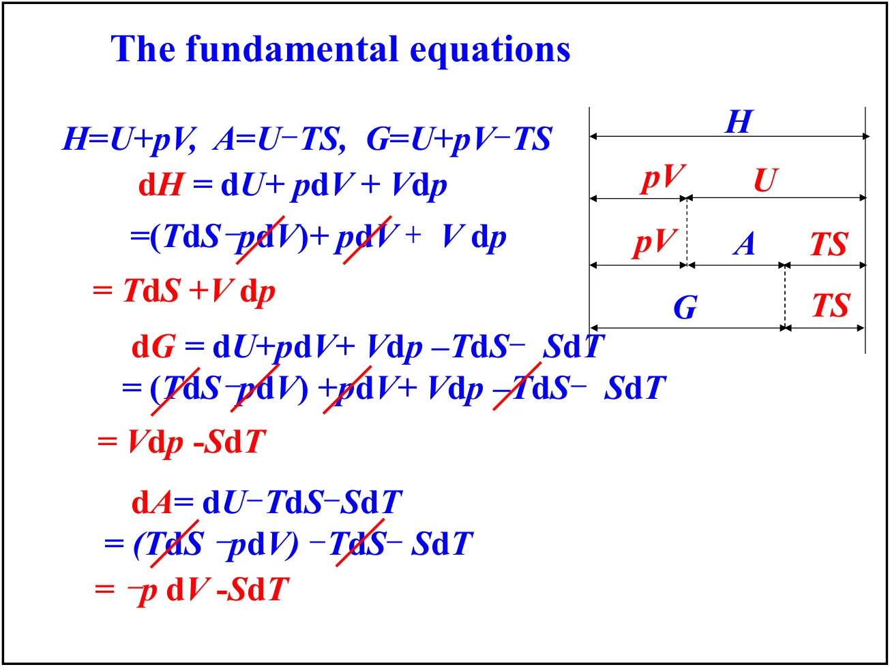
其余三式由定义直接微分得到。以 dH 为例：dH = dU + pdV + Vdp = (TdS − pdV) + pdV + Vdp = TdS + Vdp，其中 −pdV 与 +pdV 恰好抵消。四个方程汇总为：
每个基本方程右侧的两项都是“一个强度量 × 一个广延量的微分”。自然自变量的配对不是随意选的：U 的自然变量是 (S, V)，H 是 (S, p)，A 是 (T, V)，G 是 (T, p)。只有用自然变量时，该状态函数的偏导数才直接给出另一个状态量；换成别的变量，导数就不再等于表中这些简单结果。
Maxwell 关系的数学来源是一条非常简洁的定理：若 dz = gdx + hdy 是全微分，且 g = (∂z/∂x)y、h = (∂z/∂y)x，则二阶混合偏导与求导次序无关，于是
把这条定理分别用到四个基本方程上，就得到四条 Maxwell 关系：
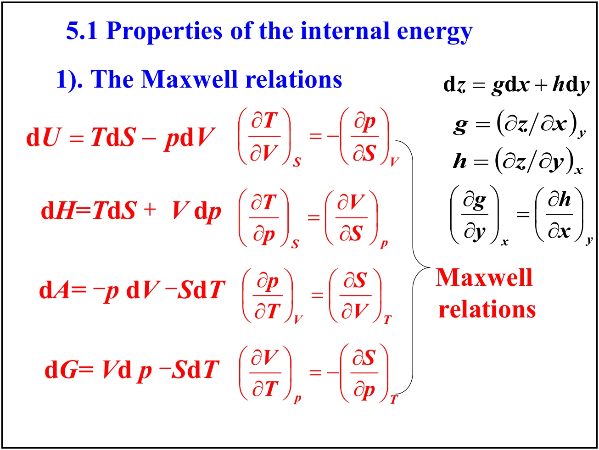
这些关系之所以重要，是因为它们把无法直接测量的熵的偏导数（测量熵需要可逆热量的积分）换成只含 p、V、T 的偏导数。课件用一整页表格把这件事整理成三列对照，这张表值得整体记住：
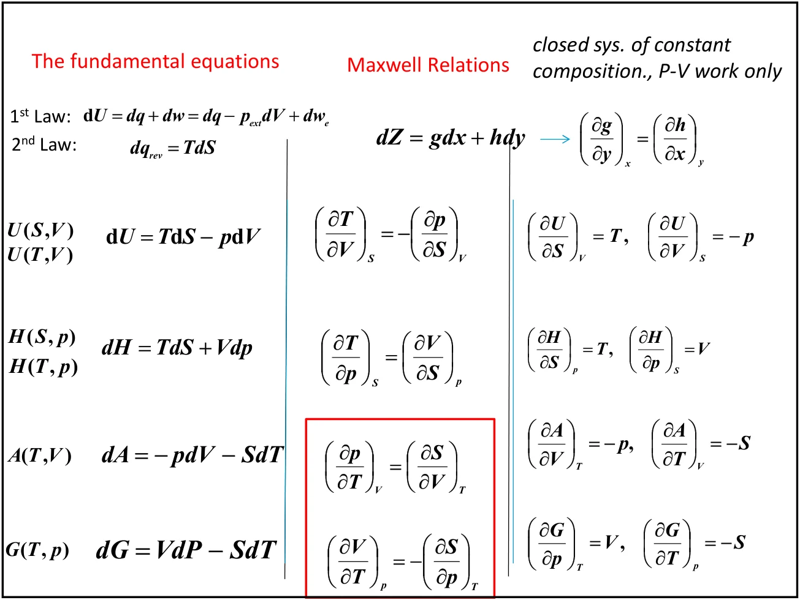
内压（internal pressure）定义为 πT = (∂U/∂V)T，它描述恒温下体积变化时内能如何改变——即分子间作用力的宏观体现。从 dU = (∂U/∂S)VdS + (∂U/∂V)SdV 出发，两边除以 dV 并加上恒 T 的约束：
代入 (∂U/∂S)V = T 与 (∂U/∂V)S = −p，再用 Maxwell 关系把 (∂S/∂V)T 换成 (∂p/∂T)V：
课件称之为“热力学状态方程”（thermodynamic equation of state）。对理想气体 p = nRT/V，T(∂p/∂T)V = p，所以 πT = 0——这与 Joule 实验的结论一致：理想气体内能只依赖温度。对真实气体 πT ≠ 0，其大小直接反映分子间吸引力。
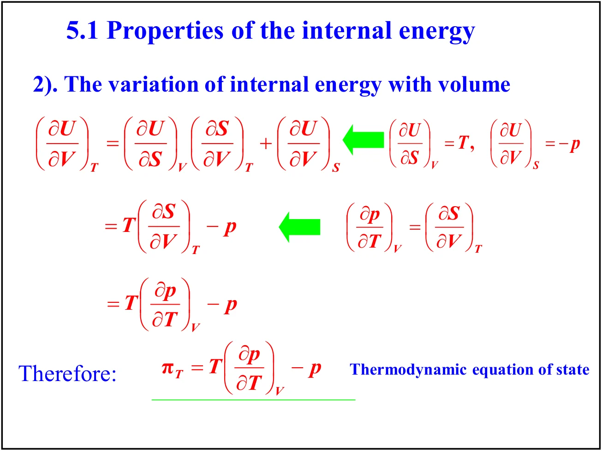
有了 (∂G/∂T)p = −S 与 (∂G/∂p)T = V，就可以讨论 G 的完整图像。
因为 (∂G/∂T)p = −S 且 S 恒为正，G 随 T 单调下降；又因为 S(气) > S(液) > S(固)，三条曲线的下降斜率依次为气 > 液 > 固。斜率大的曲线最终会从上方向下穿过其他曲线，交点就是相变温度。
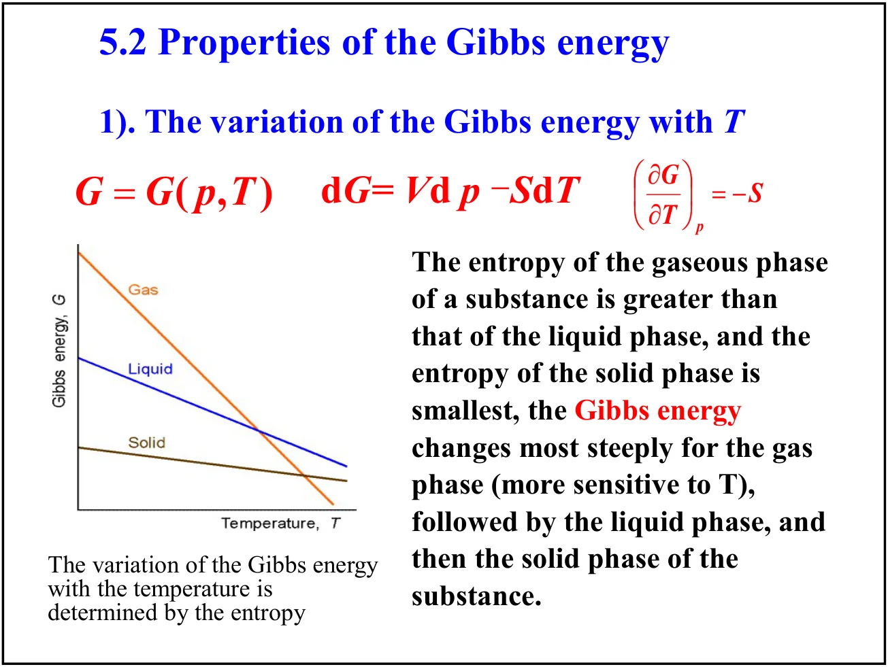
直接用 (∂G/∂T)p = −S 不方便，因为 S 随温度变化。课件把 G/T 作为新的组合函数来求导，先由 G = H − TS 得 S = (H − G)/T，故 (∂G/∂T)p = (G − H)/T。再对 G/T 用乘积法则：
把 (∂G/∂T)p = (G − H)/T 代入，G 项恰好抵消，得到Gibbs–Helmholtz 方程：
右侧只含 H，不再含难以测量的 S，因此在讨论恒压下的相变与化学反应时特别好用。课件还给出另一种等价写法，把 H 表示成 G/T 对 1/T 的导数：
这一形式说明：若以 1/T 为横轴作 G/T 图，曲线斜率就是 H——这就是从电化学或平衡数据提取反应焓的方法。
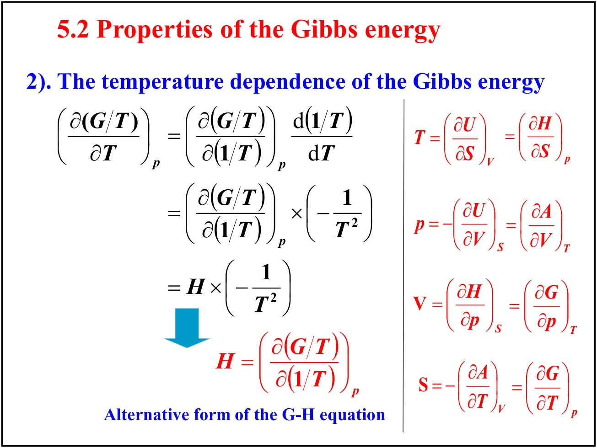
由 (∂G/∂p)T = V，恒温下积分得
对凝聚相，Vm 近似与压力无关，可直接提出积分号：ΔGm = VmΔp。因液体与固体的 Vm 很小（水约 18 cm³·mol−1），压力变化对 G 的影响远小于温度。对理想气体 Vm = RT/p，积分给出对数关系，这正是下一节化学势公式的来源。
课件例题：298 K 下把压力等温地从 1.0 bar 升到 2.0 bar，求 (a) 液态水（视为不可压缩流体）与 (b) 水蒸气（视为理想气体）的摩尔 Gibbs 能变化。
(a) 液态水：取 Vm ≈ 18 × 10−6 m³·mol−1，Δp = 1.0 × 105 Pa，
(b) 水蒸气：用 ΔGm = RT ln(pf/pi)，
两者相差近三个数量级。这个对比说明：讨论压力对凝聚相平衡的影响时，通常可以忽略 ΔG 的压力项，但对气相绝不能忽略。
与第七课的生成焓、生成熵平行，标准反应 Gibbs 能也可由两部分构成：
或者按生成 Gibbs 能加权求和，产物取正、反应物取负：
标准生成 Gibbs 能定义为由参考状态的单质生成 1 mol 化合物时的标准反应 Gibbs 能。课件强调一条与生成焓相同的规则：处于参考状态的单质的 ΔfG° = 0，因为它们的“生成反应”是空的（null reaction）。
25 ℃ 下已知 ΔfG°(CO2, g) = −394.4、ΔfG°(CO, g) = −137.2 kJ·mol−1，O2 处于参考状态故为零：
结果为负，说明 25 ℃、标准状态下该反应自发。注意这里 TΔrS° 这一项被生成 Gibbs 能表“吸收”了——查表比每次自己算熵变更省事。
“生成 Gibbs 能为零”只对处于标准状态下的参考单质成立，例如 25 ℃、1 bar 下的 O2(g)、H2(g)、C(石墨)、Br2(l)。金刚石、臭氧、O2(g) 在 300 bar 下都不适用。另外，离子在溶液中需要另行约定（通常取 ΔfG°(H+, aq) = 0）。
第七课处理的是组成固定的封闭体系，但化学的核心是组成变化。为此要把基本方程推广，让 G 也依赖各物质的量 nJ：
μJ 即物质 J 的化学势：恒温恒压下，向体系中加入极少量的 J 所引起 Gibbs 能的增量。对纯物质，由于 G 是广延量且只有一种组分，偏摩尔量就等于摩尔量：
于是由 dGm = Vmdp − SmdT，在恒温下得到化学势随压力的基本关系：
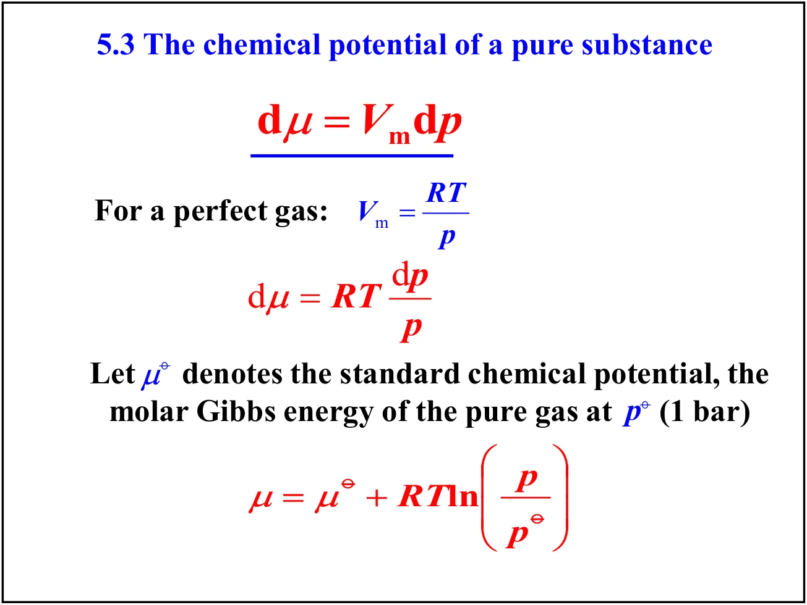
对理想气体 Vm = RT/p，代入得 dμ = RT dp/p，从标准压力 p° 积分到 p：
其中 μ° 是标准化学势，即纯气体在 p° = 1 bar 时的摩尔 Gibbs 能。这个式子是全部化学平衡理论的起点：由它出发，可以把 ΔrG 写成各分压的函数，再令 ΔrG = 0 就得到平衡常数 K。
对纯物质 μ = Gm 是恒等式；但对混合物，μJ 是偏摩尔 Gibbs 能 (∂G/∂nJ)，一般不等于 J 单独存在时的摩尔 Gibbs 能。G = ∑J nJμJ 才是普遍成立的关系，而 G = nGm 只对纯物质成立。
理想气体的 μ = μ° + RTln(p/p°) 简洁好用，但真实气体不服从 pV = nRT。课件的处理思路是：不改变公式的形式，只把压力换成一个新的量，使公式继续成立。这个量就是 fugacity（逸度，意为“逃逸倾向”）。
课件的开场说明了几点动机：从理想体系转向真实体系时，保留理想体系已推出的表达式形式是最方便的，这样偏离理想行为的部分可以用最简单的方式表达；而且真实气体与理想气体的状态方程差异其实很小，预期 G 的压力依赖也应相似。课件还提到 fugacity 这一术语由 Gilbert Lewis（1908）提出。
逸度 f 的定义是让它替代压力后公式形式不变：
为了让它有唯一确定的数值，还需指定真实气体的标准态。课件的说法是：理想气体在压力为 p°（1 bar）时处于标准态，此时压力完全来自分子的动能，没有分子间作用力需要考虑；而真实气体的标准态是一个假想态（hypothetical state）——气体处于压力 p° 且表现得像理想气体。这个假想态是真实气体在 p → 0 时行为的延长线，1 bar 处的真实气体本身并不是它的标准态。
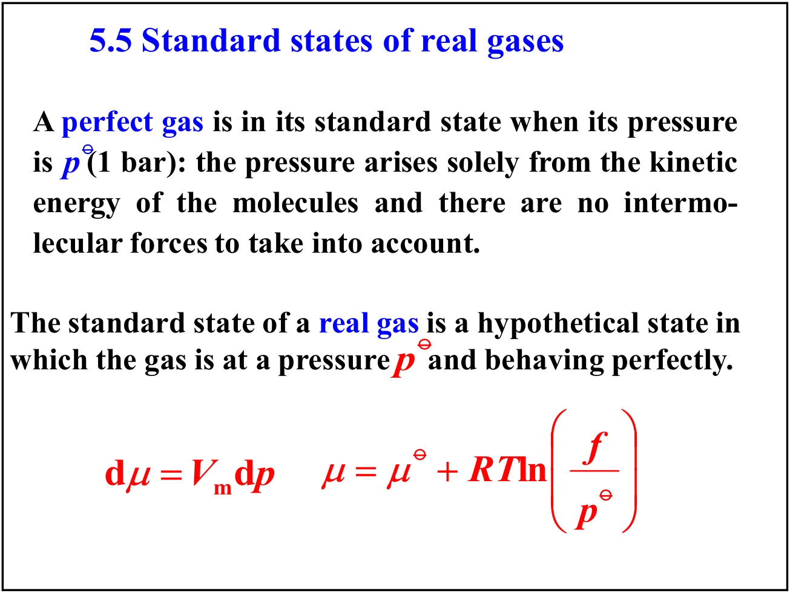
定义逸度系数 φ 为逸度与压力之比：
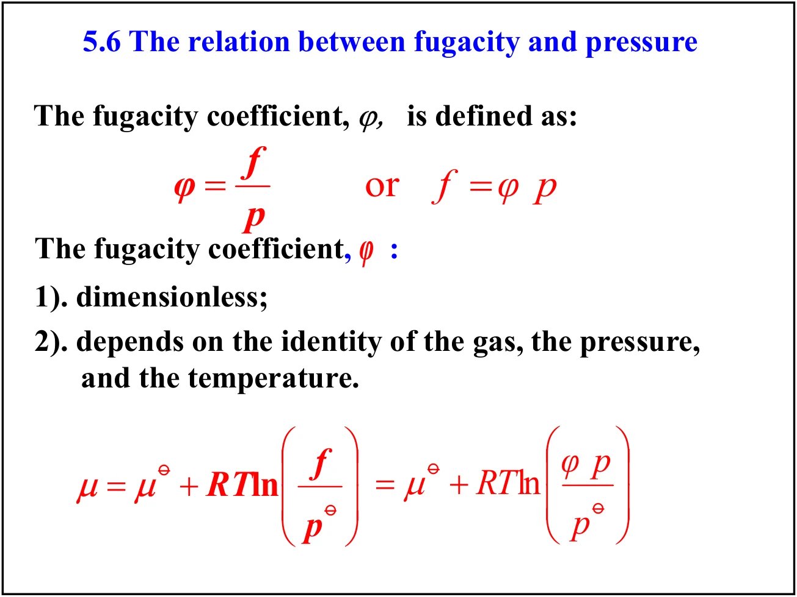
课件明确指出 φ 的两条性质：① 它是无量纲的；② 它依赖气体的种类、压力与温度。当 p → 0 时真实气体趋于理想，故 φ → 1、f → p。把 μ 的表达式写成“理想项 + 修正项”的两段式，正是逸度这个概念的实用价值：修正项 RTlnφ 可以单独处理。
课件用一个巧妙的对比来求 f。对真实气体，从某一参考压力 p′ 积分到 p：∫p′p Vmdp = μ − μ′ = RT ln(f/f′)；如果该气体是理想的，则 ∫p′p Vperfect,mdp = μperfect − μ′perfect = RT ln(p/p′)。两式相减消去共同的参考态：
当 p′ → 0 时气体表现理想，f′ = p′，故 p′/f′ → 1。以此为参考，上式化为逸度系数的积分表达式：
课件随后引入压缩因子 Z = pVm/RT（也可写作 Z = Vm,real/Vm,ideal）。由于 Vm − Vperfect,m = (Z − 1)RT/p，代入上式得到本讲最实用的一个公式：
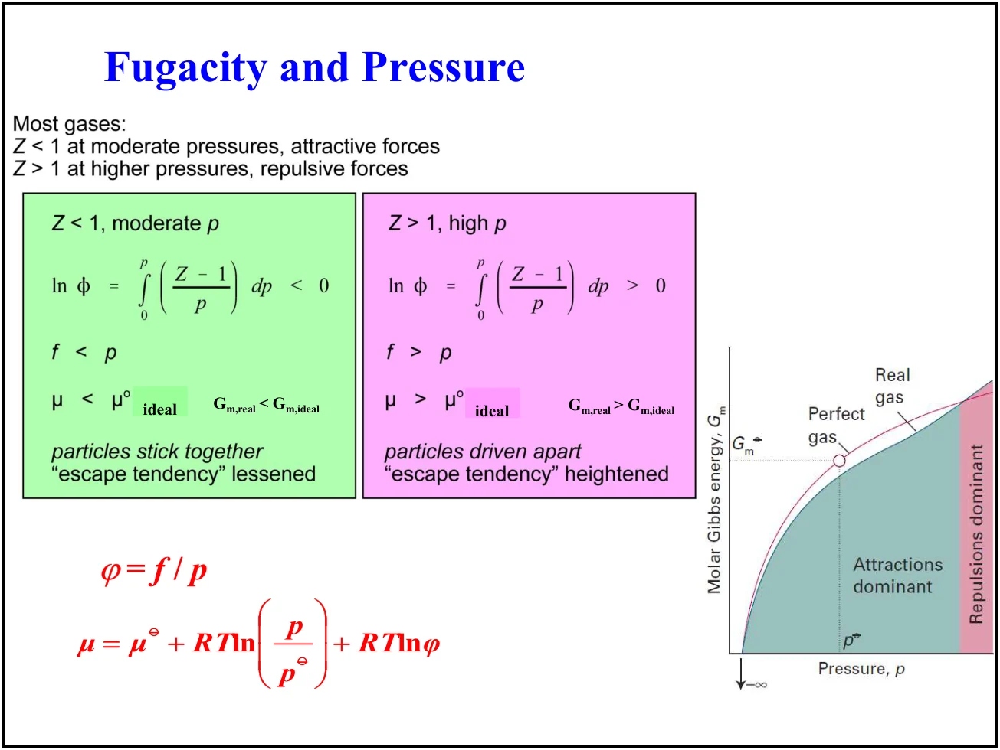
1 的高压下 ln φ > 0、f > p、μ > μideal。右侧为摩尔 Gibbs 能随压力变化的曲线，标出吸引力主导区与排斥力主导区" loading="lazy" decoding="async" />分子相互吸引使实际压力低于理想值，(Z − 1)/p < 0，故 ln φ < 0，于是 f < p、μ < μideal、Gm,real < Gm,ideal。课件用“粒子彼此黏在一起，逃逸倾向减弱”来描述。
分子间排斥使实际压力高于理想值，(Z − 1)/p > 0，故 ln φ > 0，于是 f > p、μ > μideal、Gm,real > Gm,ideal。课件描述为“粒子被推开，逃逸倾向增强”。
课件还给出逸度图（fugacity coefficient vs reduced pressure），用对比变量把不同气体画到同一张图上：低压区按对应状态原理近似重合，高压区则按对比温度分层展开。这种图的用法是：知道气体的 Tr 与 pr，查出 φ，再由 f = φp 得到逸度。
课件点出一个常见问题：平时写平衡常数都用分压，K = pHBr2/(pH2pBr2)，但严格来说这个式子只对逸度成立，精确表达式应为 K = fHBr2/(fH2fBr2)。用分压代替逸度是一个近似，在低压下误差可以忽略。
课件最后用一张总图把 ΔG 的计算串起来。判据是 dGT,p,we=0 ≤ 0，对反应 aA + bB → lL + mM（恒 p、T），ΔG 的求法分三条路：
适用于只需知道某个温度下 ΔG 的场合。
最省事，但只能得到 298 K 附近的值。
若需要 任意温度 的 ΔG，还要把 ΔH 和 ΔS 各自随温度外推。课件给出的外推工具是 Kirchhoff 定律与熵的积分式：
其中 ΔrCp° = ∑产物νCp,m° − ∑反应物νCp,m°。课件还给出恒温下反应 aA + bB → lL + mM 的另一种写法：对理想气体 ΔH = ΔU + Δ(pV) = ΔU + ΔngRT；而 ΔGm°(298 K) = ∑νΔfGm° 并箭头指向 ΔrG°(T)。
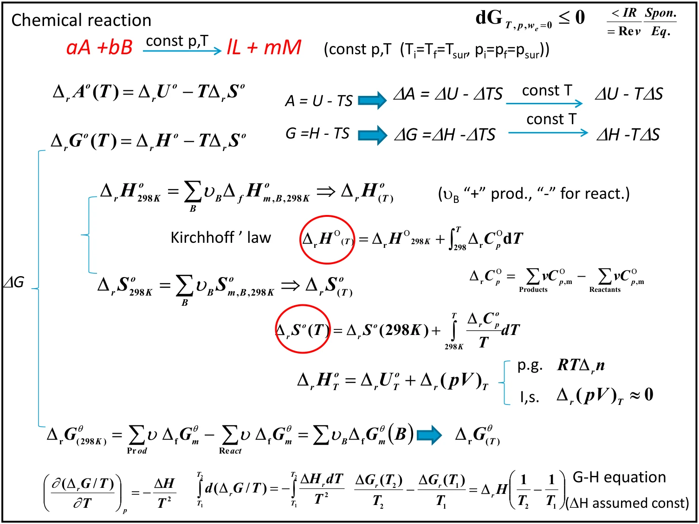
课件标注：对理想气体，ΔH = ΔU + Δ(pV) = ΔU + ΔngRT，必须保留 RTΔng 项；而对凝聚相反应，Δ(pV) ≈ 0，可以忽略。这正是第七课热化学中那条“只对涉及气体的反应做 Δng 修正”的经验规则的来源。
① 课件第 10 页同时列出 4.1—4.5 与 4.6—4.7 的章节提纲，本讲只展开 4.6、4.7 与第 5 章；4.1—4.5 属第七课内容。② 第 6—9 页的葡萄糖例题在第 7 页给出两种口径：用 310 K 得 ΔrG° = −2865 kJ·mol−1，用 298 K 取整得 −2862 kJ·mol−1；本课正文采用前者（血液温度 37 ℃），两者差异仅来自温度取值。③ 第 23 页例题只给出方法与积分式，未给数值答案，本课正文的 +1.8 J·mol−1 与 +1.7 kJ·mol−1 是按课件方法代入 Vm(H2O, l) ≈ 18 cm³·mol−1 算得，请与课程指定教材核对。④ 第 42 页总图底部写出的 Gibbs–Helmholtz 线性形式假设 ΔH 为常数，温度跨度大时需改用含 ΔCp 的完整积分。⑤ 课件多处使用 “plank” 拼写与 ϕ/φ 混排，本课正文统一为 φ。
本次测验的概念校正：最大输出功与对体系做功符号相反；状态函数基本关系不等于实际不可逆过程的热功表达式。lnφ由从零压到目标压力的积分决定，不能只凭目标压力处Z的符号判断φ大小。
15道单选、3道多选、2道判断、2道填空。按5道基础、10道中等、4道较难、3道拓展递进；交卷后查看答案与解析。